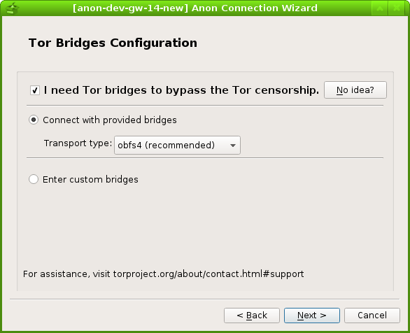

The development progress of the BridgeDB API can be found here:
https://trac.torproject.org/projects/tor/ticket/15967
Feature request on Debian BTS: https://bugs.debian.org/cgi-bin/bugreport.cgi?bug=872456
Feature request on tor-dev@: https://lists.torproject.org/pipermail/tor-dev/2017-August/012399.html
1 Like
I will strip the bridges out manually currently. And perhaps write a RE filter script to help me with that. 
1 Like
David Fifield answered on the tor-dev@:
To get an idea of how frequently the list of default bridges has
changed, see the tbb-bridges keyword in the bug tracker:
https://trac.torproject.org/projects/tor/query?keywords=~tbb-bridges&col=time&col=id&col=summary&col=keywords&col=status&desc=1&order=time
The frequency is generally once per month while sometime three times a month.
This RSS feed may be helpful to immediately inform us the new changes.
1 Like
I apologize that I did not follow up with this.
I am doing the final evaluation of GSoC which requires:
As part of the final evaluation, all participating students must provide a link to the work they have done for the program.
And:
You should share your link with your mentor BEFORE submitting your evaluation to make sure it’s okay.
How do you like the following process, @Patrick ?
- I write down a post below introducing the GSoC anon-connection-wizard project;
- I post it on Whonix blog after your review and maybe some revision;
- I use the URL to the Whonix blog post as the final evaluation link.
Thank you very much for your time!
1 Like
GSoC with Tor and Whonix: Anon-Connection-Wizard
Hello everyone! I am iry.
As some of you have noticed, I have been working on an application called anon-connection-wizard as a Google Summer of Code(GSoC) project this year.
I was under the mentor and help of the Whonix core developer @Patrick, and so many other enthusiastic developers including but are not limited to @JasonJAyalaP , joysn1980, @HulaHoop from Whonix, and Sukhbir (sukhe) from the Tor project. I would like to say thank you to everyone who has helped me from my heart. Within such a supportive community, I enjoyed the development process so much that I kept experiencing flows.
This post, presenting in a Q&A form, is an introduction to the anon-connection-wizard which will be shipped with the upcoming Whonix 14! It is also a summary of the work I have done and the tasks I will be working on.
Q: What is anon-connection-wizard?
A: anon-connection-wizard is a python-based application that help users in different Internet environment connect to the Tor network. The followings are some screenshots of it which provides you with some visual impression on it:




Q: How does anon-connection-wizard work?
A: It will firstly ask users questions about their network environment, like whether they live in censored areas. And then, it will generate a .torrc file with the most suitable Tor configurations according to the answers from users.
Q: Isn’t it very similar to the Tor-launcher shipped with Tor Browser Bundle?
A: Yes, it does share several similar functions with the current Tor-launcher. I have been considering Tor-launcher as the upstream of anon-connection-wizard and trying to closely keep up and collaborate with their development.
Q: Why do we need anon-connection-wizard when we have already had Tor-launcher?
A: Because these two applications have very different use cases. Currently, the implementation of Tor-launcher heavily relies on the Tor Browser(which is based on Firefox). However, a Tor user does not necessarily be a Tor Browser Bundle user. There are still a large number of people I call system Tor users who would like to run core Tor with different torified applications. And these people (yes, you are one of them if you use Whonix!) may prefer anon-connection-wizard because it does not rely on Tor browser and all its dependencies have already been packaged into Debian.
Q: What works have you done during the summer?
A: anon-connection-wizard was originally developed by @troubadour as part of the Whonix Project. Some of the screenshots of its old version can be found in this Whonix blog post. In March, I completed the basic function and ported it from Python2 to Python3, from PyQt4 to PyQt5. During the summer, I made a huge amount of improvement and changes, which include:
- Completely redesign anon-connection-wizard UI basing on Linda’s PET paper and Tor UX team’s proposal to new Tor-launcher.
- Add a torrc page in anon-connection-wizard that allows users have an overview before connecting to the Tor network
- Add serveral help buttons with detailed instructions to help users make decision
- User input validation check
- Let anon-connection-wizard remember user’s last time settings
- Create a torrc_repair script that tries to fix corrupted .torrc files
- Improve and add features to the tor_status.py
- torrc.d feature request against Debian Tor package
- Switch from overwriting .torrc approach to edit-mark approach, and then to torrc.d approach
- Shipping default Tor bridges request
- Update default provided Tor bridges
All my commits in the summer can be found in this pull request which has been merged into the Whonix repository.
I also wrote bi-week reports to @tor-project mailing list, which have been recorded on GSoC page in Tor wiki.
Q: What is your next step on anon-connection-wizard?
A: I will still be working on my Github repository and the following features will be implemented in the near future :
- implement bridges information validity check by RE or Tor ERROR complaints
- merge whonixsetup(cli) into anon-connection-wizard
- integrate whonix-setup-wizard with anon-connection-wizard
- implement bridge request via anon-connection-wizard once BridgeDB API is finished #15967
Q: What are you going to do in the future development?
A: The future goal of anon-connection-wizard is to be packaged as a generic standalone application into Debian so that it can be used by different anonymity focused distributions like Whonix and Tails. In order to achieve it, the following works need to be done:
- package anon-connection-wizard as .deb
- make anon-connection-wizard translatable
- get anon-connection-wizard translated into different languages
- after doing all the steps above, check if it can be helpful for Tails
What’s more, Tails developer anonym pointed out a promising future for the anon-connection-wizard on the tor-dev mailing list:
Any way, I also see potential for future collaboration between Whonix and Tails for extending the usefulness of anon-connection-wizard beyond what Tor Launcher (and its replacement) offers [2]; anon-connection-wizard targets the OS, not just a single application, so it could integrate the choices of network configuration (wired? which wireless network? MAC spoofing?) and Tor configuration (proxy? pluggable transport?) in a single place which probably makes more sense for users and also allows us to more easily (optionally) save these settings so they are restored the next time you visit the same network. This could potentially even be used to help giving users control over entry node selection to avoid persistent Entry Guards from leaking information about you geographical movement. [3]
Q: Can I get involved into the development of anon-connection-wizard, too?
A: Absolutely! Please let me say thank you for your interest in anon-connection-wizard! I was trying to keep most of my development communication public so that people like you can have a clear idea on how all the developing decisions have been made and how we have been communicating and cooperating with each other. Most of the discussions happened in these two places and a simple “hi, I think maybe I can help with…” is just enough to join us:
- [graphical gui] Whonix Setup Wizard / Anon Connection Wizard - Technical Discussion
- review and merge anon-connection-wizard pull request by iry
Note that offering feedback, testing, developing, packaging, porting and translating are all ways to contribute and will all be welcomed!
Q: What other work have you done during the summer?
A: Like what I said in my GSoC proposal:
I never consider my project as a one-time project. Instead, I consider it as an important step to help myself get more involved in the Tor/Whonix community.
I was trying to jump into and follow up many different parts of the Tor and Whonix community. For those who may be interested, here are some links:
2 Likes
iry:
How do you like the following process, @Patrick ?
- I write down a post below introducing the GSoC anon-connection-wizard project;
- I post it on Whonix blog after your review and maybe some revision;
- I use the URL to the Whonix blog post as the final evaluation link.
Sounds perfect!
1 Like
The blog post is also perfectly worded! There are some duplicate spaces , please remove these. That’s about it. Please create the draft. I’ll look over it and publish it.
HI @iry
I really like the new look of the Gui. I looks a lot cleaner than the previous one. Thanks for all the hard work you put in the project and I’m glad to here your sticking around after the GSoc. 
2 Likes
Very long term:
This is very difficult to not break Whonix support then.
- Non-Qubes-Whonix: these settings happen on the host, inaccessible to tor-connection-wizard
- Qubes-Whonix: these settings happen in other VMs (in sys-net)
But perhaps it could be split into multiple modules which could be used independently.
Thank you very much for your feedback, @Patrick!
Done! I have edited the original post.
I am not very familiar with the Whonix blog posting process. Do I need to register on Whonix blog somewhere and then create a draft? Or is it okay for me to leave that post I just edited as a draft?
1 Like
Thank you very much for your feedback, @0brand !
I will definitely stay around and I am looking forward to the further cooperation with you in the future!
1 Like
I couldn’t agree more! Integrating those relatively independent modules together seems not to be a low-coupling design. (Btw, Tor-launcher is also a victim of high-coupling design.)
The following is the archives of your and my replies to this problem:
1 Like
There are at least four "Tor-launcher"s being developed and maintained, which consumed a lot of developer time:
- Tor-launcher in TBB
- Tor-launcher in sandbox TBB by yawning
- anon-connection-wizard in Whonix
- Tor-launcher in Tails
When anon-connection-wizard is mature enough to be also used in Tails, problem can be mitigated a little bit.
1 Like
Please sign up using https://www.whonix.org/blog/wp-login.php?action=register and tell me your user account so I can add you write access.
1 Like
Thank you, Patrick!
I have registered my username as iry.
1 Like
Alright. Please try writing a blog draft.
1 Like
Low priority… Could you please prettify the short and long package description in debian/control?
- https://github.com/Whonix/anon-connection-wizard/blob/master/debian/control#L21
- https://github.com/Whonix/anon-connection-wizard/blob/master/debian/control#L22-L27
I guess there is a lot more to say there now. More generically. Not tied to Whonix. The description targets users, not so much developers.
Would then show up in package info websites. Example: https://packages.debian.org/stretch/tor
(Then please try to rebuild the package so that no new lintian warnings due to the improved package description are introduced.)
1 Like
Thank you, Patrick!
I have created a draft and hit that Submit for Review button.
Great, published!
1 Like